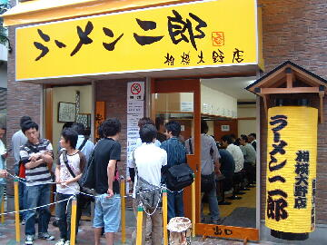
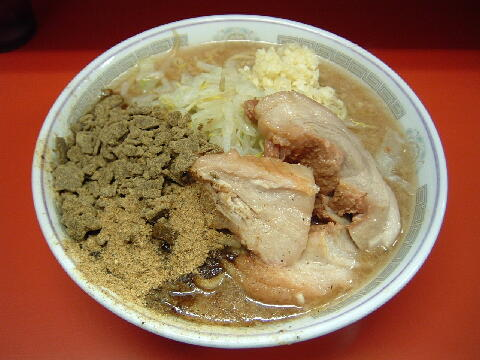
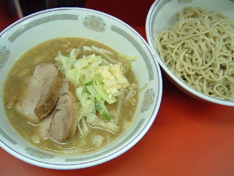
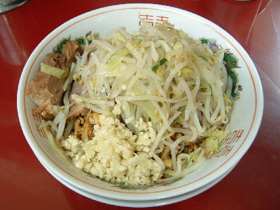
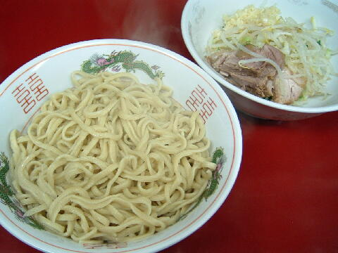
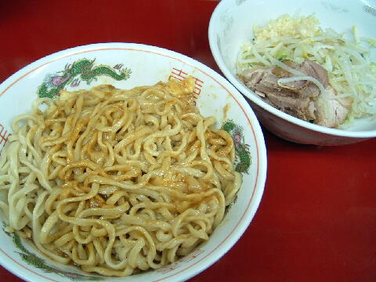
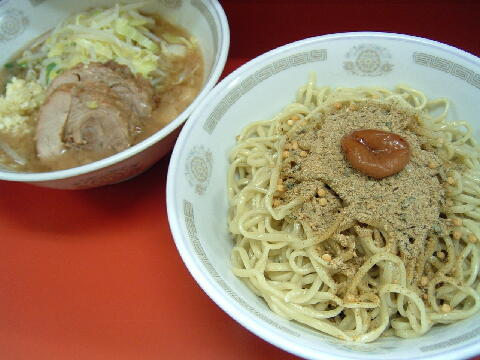

相模原市 南区 相模大野 6-14-9
第1,3,5日・月
祝・台風予報の日・大雪予報の日は不定休
10：30〜14：00 17：30〜21：00
土・第2,4日 10：30〜15：00
営業日、営業時間はかなり流動的なので注意（Twitter など）が必要

ラーメン 750円
大ラーメン 870円
ラーメンより少こし少なめラーメン 700円
ブタ増し ＋250円
つけ麺 ＋150円、賄い ＋200円、お茶漬け〜麺 ＋200円、グッチーズカレー ＋200円
和っ！カレー 100円、極上生たまご 80円、すき焼きタレ生たまご 100円
おみやげ
お持ち帰りチャーシュー 1000円、唐あじ 300円、あぶり焼き 600円、ぶためしのテッペン 200円
有料トッピングは度々追加される。
店員は、元力士の店主とバイト２名。
仕切り時間一杯の緊張感を体感できるかも？！
コショウ、トウガラシ、醤油ダレ、粗挽き黒コショウ、粗挽きトウガラシ。
レンゲ有。エコ箸に割り箸が少々。ティッシュ有。名刺無。
BGMは、有。
トッピングは、大きな声ではっきりとコールすること。
マシマシ、かため、柔らかめ、脂抜き、ブタなし、野菜抜き、麺マシはできない。
ラーメン二郎 相模大野店 相模大野店の公式HP
ラーメン二郎 相模大野店 ラーメン二郎相模大野店のFacebook
ラーメン二郎 相模大野店（スモジ） 相模大野店のTwitter
「ラーメン二郎 相模大野」でヤフー検索
「ラーメン二郎 相模大野」でヤフーリアルタイム検索
「ラーメン二郎 相模大野」でグーグル検索

ラーメン ニンニク 和っ！カレー
麺は、二郎基準よりやや細目だが、直系二郎の柔らかめの麺。硬め不可。
ぶたは、アタリ，ハズレはあるものの、厚切りで二郎のぶた。
大相撲千秋楽にはぶたを炙ってくれるときもある。
スープは、カラメの乳化タイプが少し。
ヤサイは、モヤシ7：キャベツ3の割合。柔らか目のヤサイがカラメの乳化したスープと良く合っている。
ニンニクは、細かくてしっかりと辛いニンニク。
和っ！カレーは、カレー粉と魚粉を振り掛けたもの（現在は別皿）。

ラーメン＋つけ麺 ニンニク
トッピングはラーメンと同じ。あつもりはできない。
つけ汁の丼には、ヤサイとぶたが入る。ニンニクはこちらに。
麺の丼には、冷水で絞められたシコシコの麺。

ラーメン＋賄い ニンニク
賄いとは、お茶漬け〜麺を汁なしにアレンジしたもの。
空の丼に重ねられて出てくる。「下の丼でまぜて下さい」とのこと。
麺はつけ麺と同じ様に、冷水で絞められた麺。
魚風味のフリカケ、お茶漬けのあられと海苔、揚げ玉がアクセント。
夏期限定？

ラーメン＋グッチーズカレー ニンニク

混ぜた後
トッピングはラーメンと同じ。
麺の丼には、あつあつの麺の下にカレールーとチーズ。
備えてあるトングで混ぜて下さいとのこと。
残りの野菜、豚、ニンニクは別丼。
正式名称は「グッちゃグッちゃにトングで混ぜて食べる・チーズ入り・カレー入りのすごくうまい・釜揚げ的な麺！！」
冬期限定？

ラーメン＋お茶漬け〜麺 ニンニク
トッピングはラーメンと同じ。
つけ汁の丼は、基本的にはつけ麺と同じだが、こぶ茶入りとなる。
麺の丼には、麺に魚風味のフリカケ、お茶漬けのあられ、梅干。
ＰＣ店